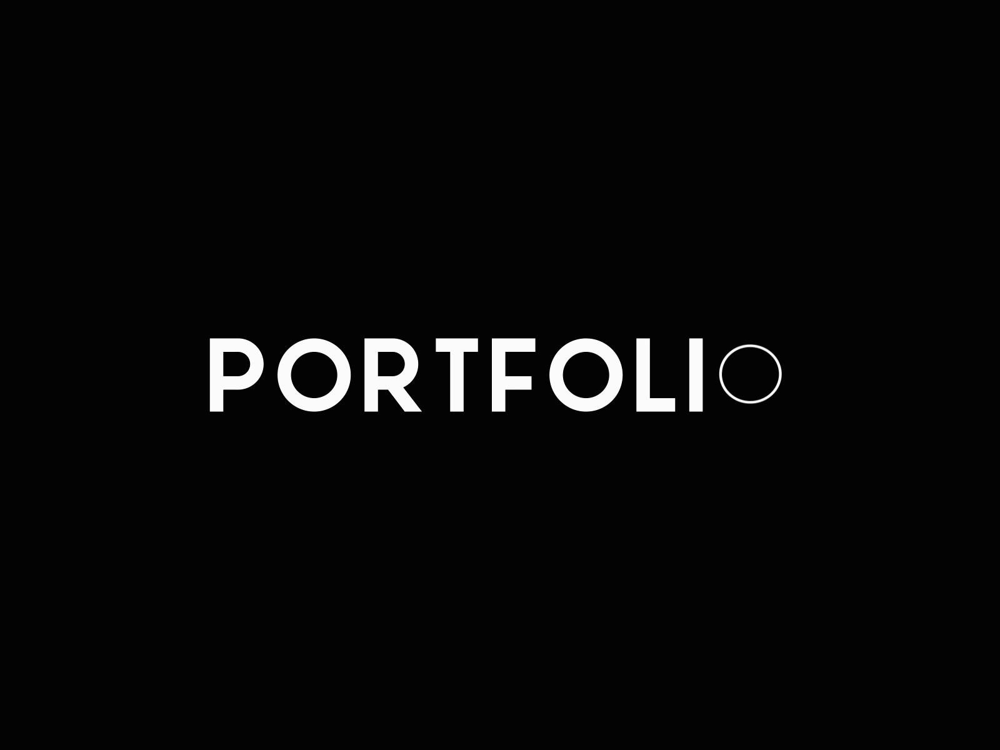

J'ai effectué des projets dans de nombreux domaines durant mon parcours scolaire mais
aussi pendant mon temps personnel. Je vais donc les présenter un à un sur cette page.
Mes compétences et projets
Portfolio Web
S : Besoin d'un site personnel
T : Créer un portfolio clair et design
A : HTML/CSS/JS
R : Site complet et responsive

Site personnel mettant en valeur mes compétences, projets et passion pour le design web.
Voir sur GithubRéaliser un développement d'application
S : Projet de jeu terminal
T : Développer un Snake en C
A : Gestion mémoire, collisions, blocs
R : Jeu fluide manuel avec commandes z, q, s et d

Jeu Snake en C sur terminal Linux. Génération aléatoire de blocs, collisions et score dynamique.
Voir sur GitHubProjet Dockerisé
S : Automatiser le traitement web
T : Utiliser Docker/Bash
A : Scripts et images dockerisées
R : Processus déployable facilement
Automatisation de conversion de fichiers web à l'aide de Docker, Bash et PHP.
Voir sur GithubTravailler dans une équipe informatique
S : Projet de groupe
T : Créer un journal noir & blanc
A : Rédaction, maquette, dessins
R : Journal complet en PDF
Création graphique d’un journal intégrant des jeux, articles, et caricatures politiques.
Voir le PDFGérer des données de l'information
S : Modéliser des données scolaires
T : Créer un schéma relationnel
A : SQL, MCD, MLD
R : Base fonctionnelle pour admissions

Conduite de projet
S : Projet gestion de projet
T : Cadrer les besoins
A : Analyse, rédaction SRS
R : Cahier des charges complet

Rédaction de la note de cadrage et des exigences logicielles pour une application de danse.
Voir sur GithubMes autres projets
Snake auto
S : Projet de jeu terminal
T : Développer un Snake en C
A : Gestion mémoire, collisions, blocs
R : Jeu fluide avec version auto

Application EllaDanse
S : besoin d'une application de danse
T : Créer une application
A : Java, JavaFX, SceneBuilder
R : Application fonctionnelle de gestion de danse
Développement d'une application de danse.
Voir sur GithubJardiniere Connectée
S : Automatiser la gestion des plantes
T : Fabriquer la jardinière et développer son automatisation
A : C++, Arduino
R : Jardinière connectée fonctionnelle